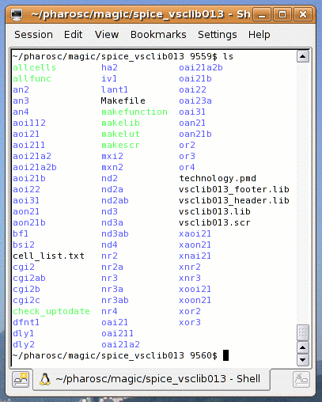

| vlsitechnology.org /Linux help/Spice characterisation | |
Spice characterisation | |
Linux help
Windows help
Linux Live CD
The files for the Spice characterisation of the different libraries in a generic 0.13µm technology are in
pharosc/magic/spice_rgalib013 pharosc/magic/spice_ssxlib013 pharosc/magic/spice_sxlib013 pharosc/magic/spice_vgalib013 pharosc/magic/spice_vsclib013 pharosc/magic/spice_vxlib013 |
They have been put here because Magic has been used to extract the layout to a Spice subckt.
The characterisation is done in two steps. The first is a Spice run of the CIR files in the sub-directories. The second is an elaboration of the data produced to write the vsclib013.lib and other Synopsys Liberty format .LIB files, the Alliance .VBE files and the web data sheets.
The Spice simulator used is Winspice, and the elaboration uses Unix scripts. Winspice runs in Linux under the codeweavers software, and also with Wine. Unfortunately it doesn't run in a true batch mode, popping up a window that scrolls data all the time.
The command allcells runs the winspice characterisation on all the cells and writes out a Synopsys Liberty format .LIB file, Alliance VBE format timing files and the web data book.
Individual functions can be characterised by entering the function directory and running allfunction. E.g. for the aoi31:
$ cd aoi31 $ ./allaoi31 |
You will need a command file called wspice3 on your search path which calls the winspice executable in batch mode. On my system, this is configured as below:
~ 9554$ which wspice3 /home/graham/bin/wspice3 ~ 9555$ more /home/graham/bin/wspice3 #!/bin/bash echo $1 nice -n 10 /home/graham/cxoffice/bin/wine --workdir $PWD c:\\winspice\\wspice3.exe -b $PWD/$1 date |
Winspice in batch mode is called with nice in order
to lower the job's priority. I found that if not lowered,
the job could seriously interfere with interactive activities.
A copy of this file is in pharosc/bin as wspice3_linux.
Contents of the spice_vsclib013 directory. 